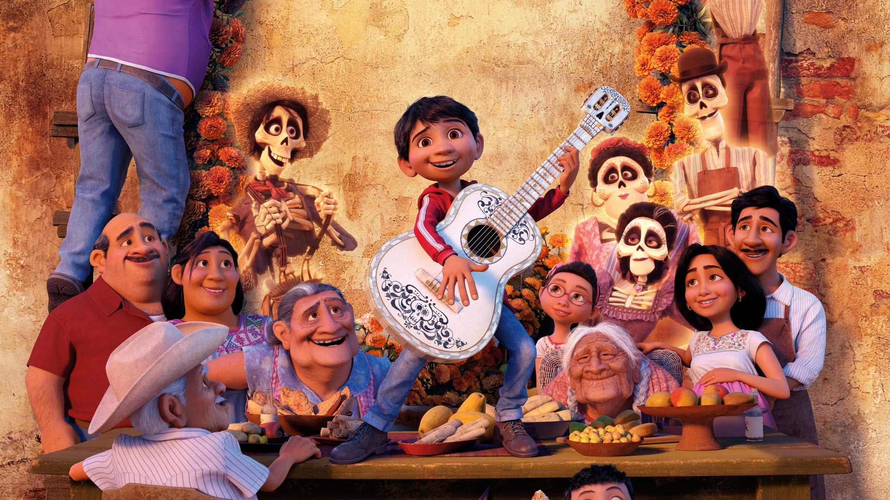

Description
Many years later, Imelda's great-great-grandson, Miguel, now lives with the elderly Coco and
their family, including Miguel's parents and his grandmother, who are also shoemakers. Despite
his family's music ban, Miguel secretly idolizes the deceased musician Ernesto de la Cruz, and
teaches himself to play guitar by watching Ernesto's old films. On the Day of the Dead, Miguel
inadvertently bumps into the family ofrenda, breaking a frame containing a photo of Imelda and
an infant Coco. He discovers a hidden section of the photograph shows his
great-great-grandfather, whose head has been torn from the photo, holding Ernesto's famous
guitar. Believing this proves Ernesto is his relative, Miguel tells his family he will become a
musician.